About the main features and functions of Arduino Uno:
Uses the ATmega328P, an 8-bit AVR microcontroller with 32KB Flash memory, 2KB SRAM, and 1KB EEPROM.
Clock frequency: The master clock frequency is 16MHz. Pin configuration: has 14 numeric pins (labeled D0 to D13), where D0 and D1 are used for serial communication; There are also six analog pins (labeled A0 to A5); There are 6 pins that support PWM.
Power options: Power can be supplied via USB port or external power supply with input voltage range from 7V to 12V or with VIN pin.
Communication interface: Having a USB interface for uploading code and communicating with a computer or other device; It also supports serial communication.
Other features: There is a reset button on the board for restarting the program; Fully compatible with the Arduino IDE software environment, it makes writing, compiling and uploading code easy and convenient.
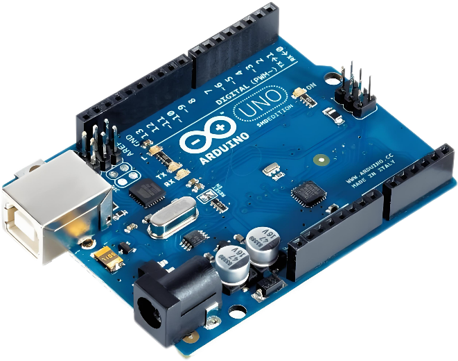A homemade water pump is used in this system, using a 5 volt DC motor. We can use a 12-volt pump in the system, but to operate it, it needs a relay module. So, to reduce the complexity of all this hardware, we made a pump based on a DC motor using a diode, transistor, and register combination circuit that operates the DC motor according to the Arduino code.
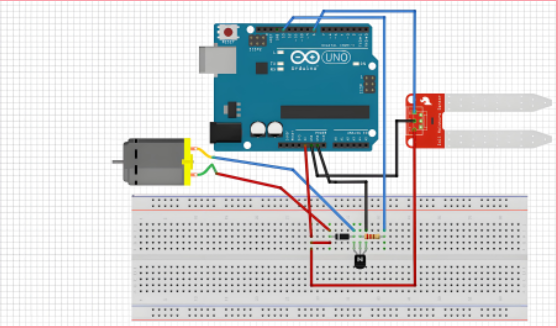Circuit description:
1. Dc motor using water pump:
Use a DC motor as a pump. The DC motor has two leads, one for the positive electrode and one for the negative electrode. If you connect them directly to the Arduino board, you will damage the board. To overcome this problem, NPN transistors are used to control the switching activity of the motor according to code.
Water pump made of 5 volts direct current mechanism
The Arduino pin 13 (called WATERPUMP in the code) is used to turn the transistor on and off. Depending on the code that controls the speed of the motor, we need to enter a value between 0 and 255 in the serial monitor. Use the 200 value as the motor speed.
2. Soil moisture sensor:
A soil moisture sensor consists of two wires that measure the water content in the soil. These leads allow electricity to flow through the soil and in turn calculate the resistance value to measure the moisture content. If there is more water in the soil, then the soil will conduct more electricity, which means lower resistance values as well as higher moisture content. Similarly, if there is less water in the soil, then the conductivity of the soil will be reduced, which means that the resistance value is high and the moisture content is low.
The interface is roughly divided into four parts:
Menu bar: includes file menu, edit menu, program menu, tool menu and help menu;
Toolbar: includes compile, upload, new program (sketch), open program (sketch), save program (sketch) and Serial Monitor;
The area where program code is written;
Status area: Displays information such as compilation and upload of the program. If an error occurs in the program, an error message will be displayed.
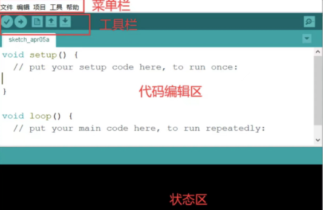Example: The environment built-in example program can be opened.
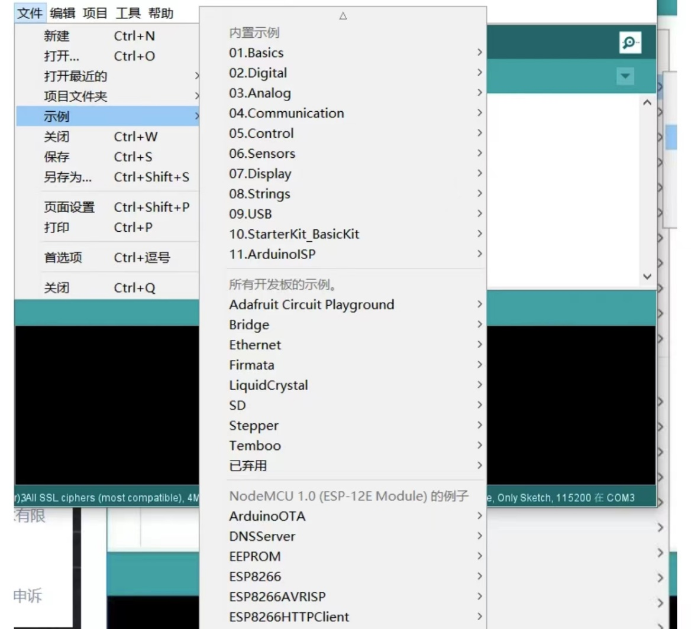Edit: Edit the code, copy and paste, comment, indent, size, find, etc. (in actual use, it is usually used with its corresponding shortcut key)
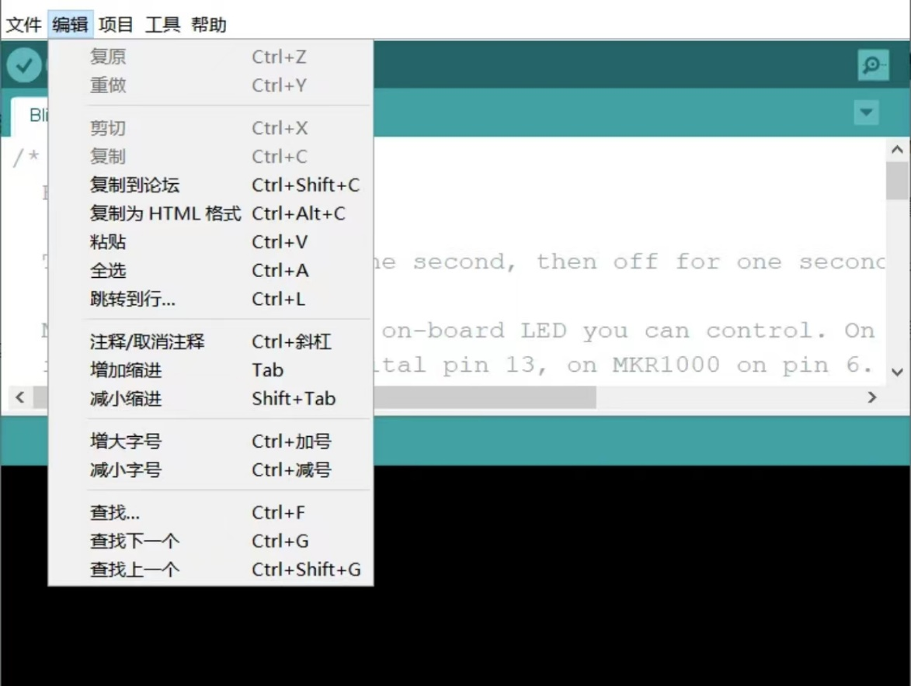Project —> Load library —>Management library: You can search various support libraries in the installation network, select the library to be installed and click install to download and install online, which is very convenient.
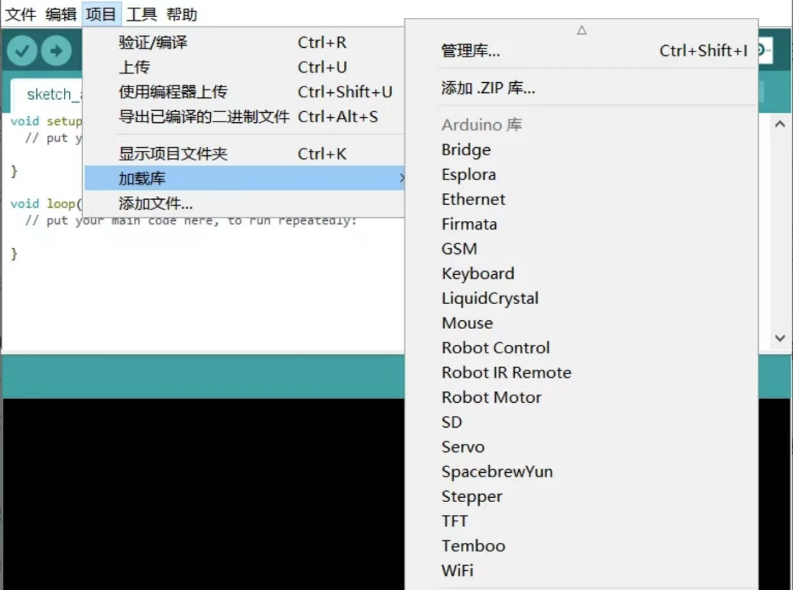Tools-> Port: Set the port required by the Arduino IDE download program, that is, the port through which the development board connects to the computer
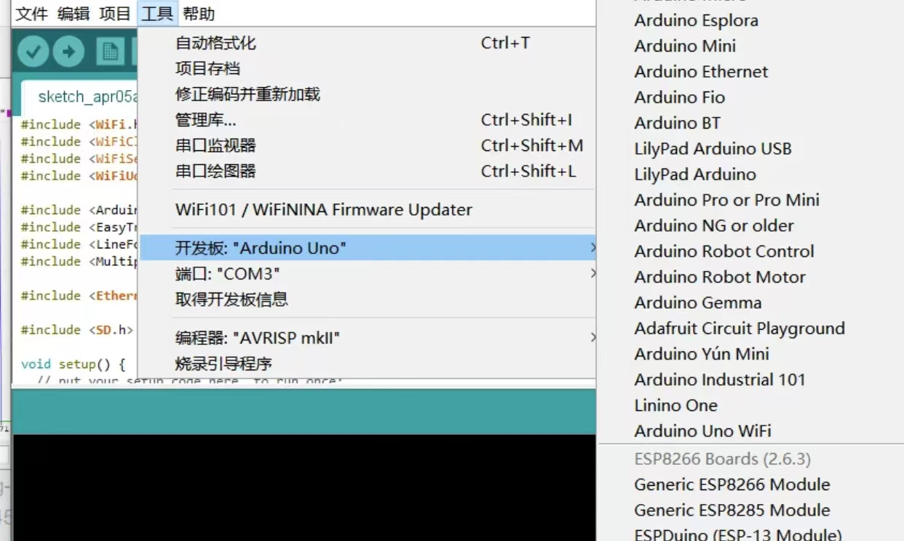
a.:the library file compression package is downloaded to the computer.
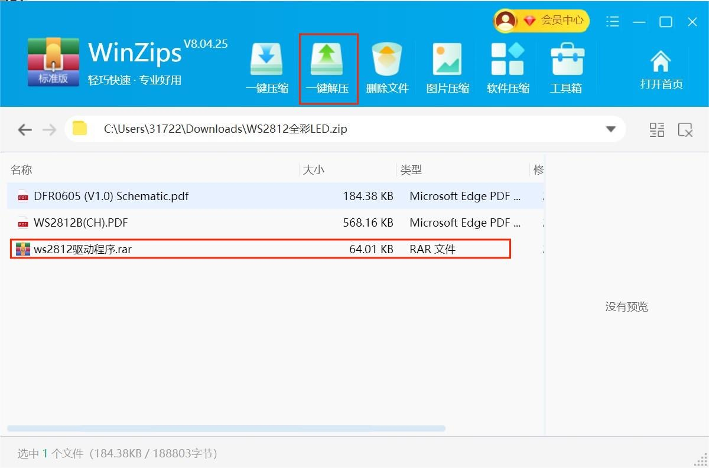b.:Find the folder named Ardunio in the folder named Adafruit NeoPixel-master.rar
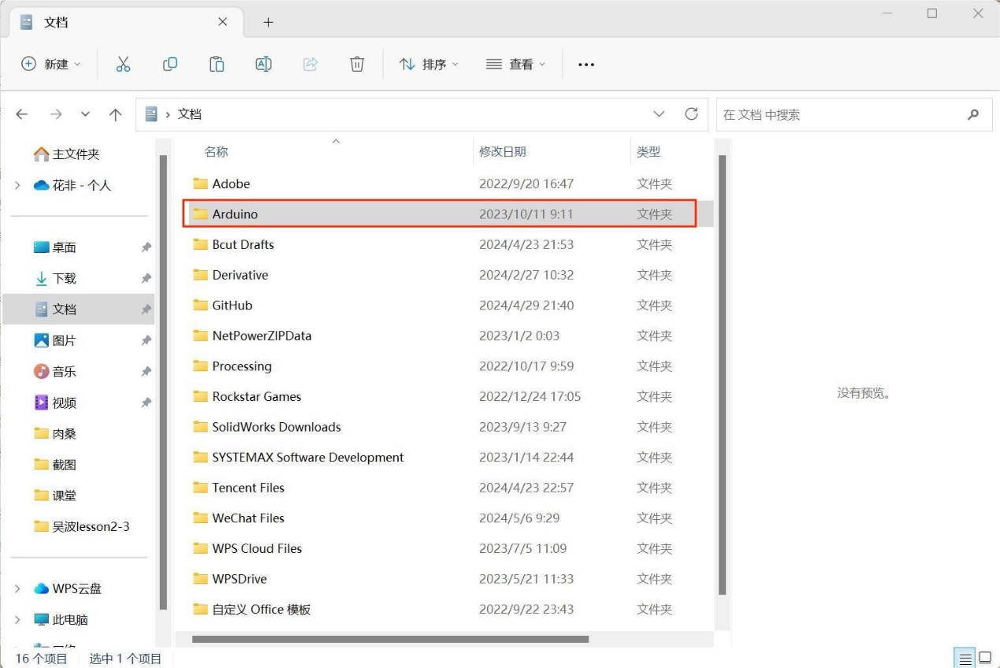c.Open the Arduino to find the sample in the edit, click Adafruit NeoPixel in the third party sample, and find the strandtest wheel
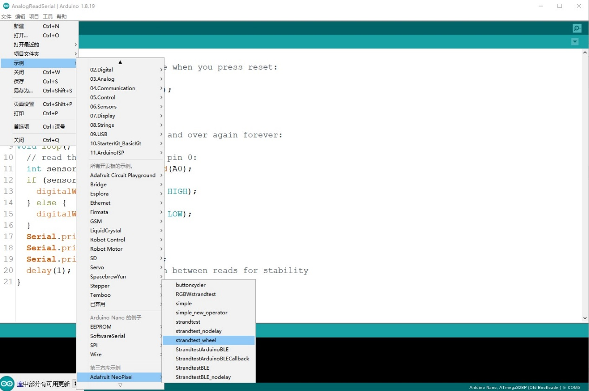d.Connect as follows
/**
* Setup and Draw.
* The code in setup() is run once when the program starts.
* The code inside the draw() function runs continuously from top to bottom until the program is stopped. The
* Reference from https://processing.org/examples/setupdraw.html
**/
int y = 180;
float x;// x=ky=(640/360)*y
void setup() {
size(640, 360); // Size must be the first statement
stroke(255,0,0); // Set line drawing color to white
strokeWeight(5);//the define of bold
stroke(255,0,0);
}
void draw() {
background(0); // Clear the screen with a black background
x = y*640/360;
strokeWeight(5);
stroke(255,0,0);
line(0, y, width, y);
strokeWeight(1);
stroke(0,255,0);
line(x, 0, x, height);
y = y - 1;
if (y < 0) {
y = height;
x = width;
}
}
a. Microalgal lamp:
A 30-nanometry-wide gold electrode was inserted into the chloroplast, the photosynthetic organ of algae cells, to draw a small amount of electricity from the algae during photosynthesis. Exhaling into the handle of the lamp provides carbon dioxide to the algae, while spouts on the side allow water to be added and oxygen released. A light sensor monitors light intensity and only allows electrons to be absorbed if it exceeds a threshold - avoiding algal malnutrition. The energy is then stored in a battery, ready to be used in the dark.
1.Clean air: Green algae absorb carbon dioxide and release oxygen through photosynthesis, helping to clean the air and reduce carbon emissions in the environment.
2.Renewable energy: The use of light sensors to absorb electrons and store them in batteries to achieve self-recycling and reuse of energy, which is a way of using renewable energy.
3.Versatility: It can not only purify the air, but also be used as a lamp in the dark, which is practical.
1.Lighting efficiency: Green algae may be relatively inefficient at converting light energy into electricity and therefore may not provide the same brightness and durability as traditional lighting equipment.
2.Maintenance costs: The need for regular maintenance of green algae growth status, as well as battery maintenance and replacement, may increase operating costs.
3. Dependence on natural conditions: The device relies on light and carbon dioxide for photosynthesis, so the effect may be limited in low-light or low-carbon dioxide environments
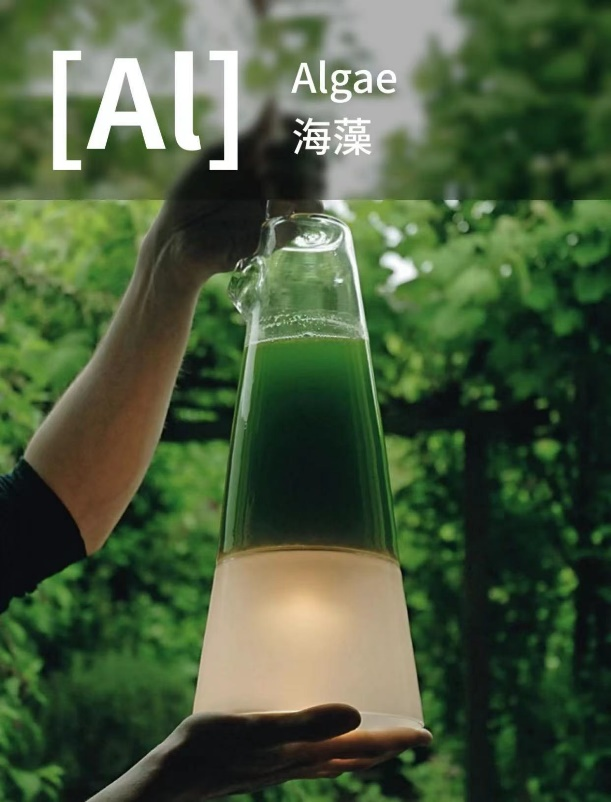 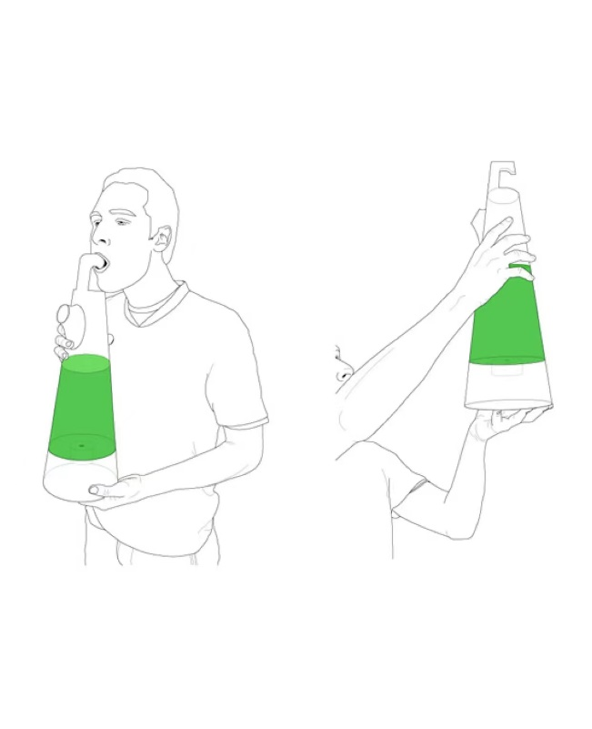
b. AirBubble：
The AirBubble is the world's first biotechnology playground to integrate microalgae air purification. This is a new type of building, namely a cylindrical wooden structure wrapped in ETFE membrane that protects the 52 glassware algae reactors inside, creating a true urban algae greenhouse. Equipped with ropes, pedal pumps and bouncy balls, the space doubles as a playground and outdoor classroom. The sound of the algae farming system producing white bubbles drowns out the surrounding urban hustle and bustle, providing the quiet atmosphere needed for play and interaction on site. The ETFE film controls the microclimate inside the AirBubble, while the film on the inverted cone top promotes air recirculation and natural ventilation, further keeping the play area clean.
The purification process is powered by solar energy and children's play interaction: the children can interact by jumping on four pedal pumps on the ground, balancing on a bouncy ball and an internal rope system to power the air purification system.
1. Air purification function: Microalgae is a kind of organism that can absorb carbon dioxide and release oxygen, so AirBubble can use microalgae technology to purify air, improve indoor air quality and contribute to people's health.
2. Environmental protection: The use of microalgae to purify the air may be more environmentally friendly than traditional air purification equipment, because microalgae is a natural organism and will not produce harmful substances.
3. Entertainment: AirBubble combines the function of a playground to provide people with a place for entertainment and leisure, making the process of air purification more attractive and interactive.
4. Innovative: This architectural design combining microalgae technology and playground function is innovative and can attract attention, and may become a new trend in future urban construction.
1. Cost: AirBubble may have high construction and maintenance costs, because both the application of microalgae technology and the maintenance of playground facilities require investment.
2. Technical challenges: Microalgae technology may present some technical challenges in terms of air purification, such as how to ensure the growth of microalgae and effective absorption of carbon dioxide.
3. Space limitation: Due to the need to combine the function of amusement park, AirBubble may have certain requirements on the area of the site, so its layout in the city may be limited.
4. Sustainability issue: Although microalgae air purification is an environmental protection technology, AirBubble needs to consider whether the growth and maintenance of microalgae can be continued in the long-term operation process to ensure the lasting purification effect.
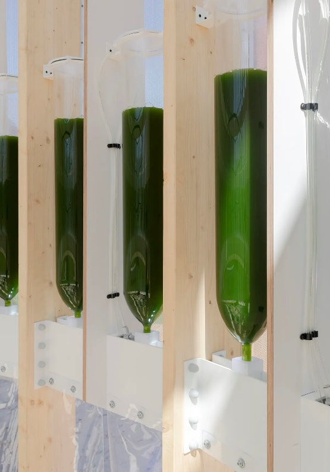 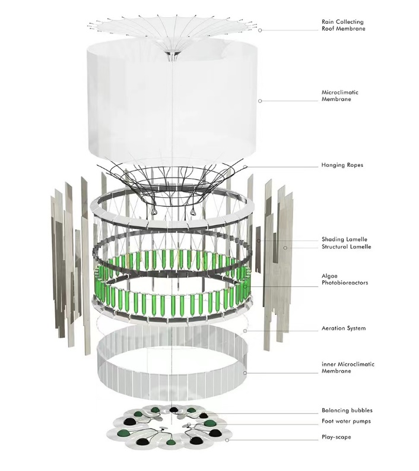 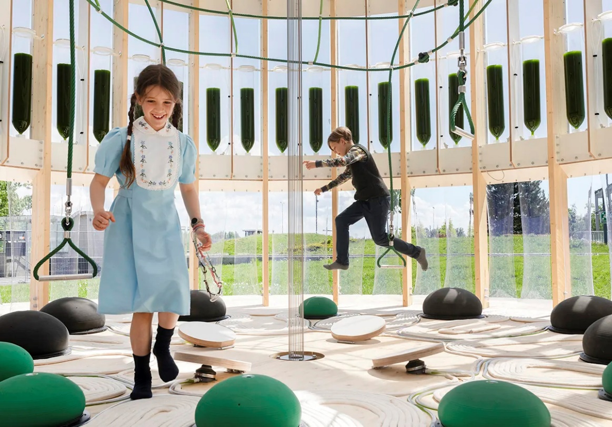